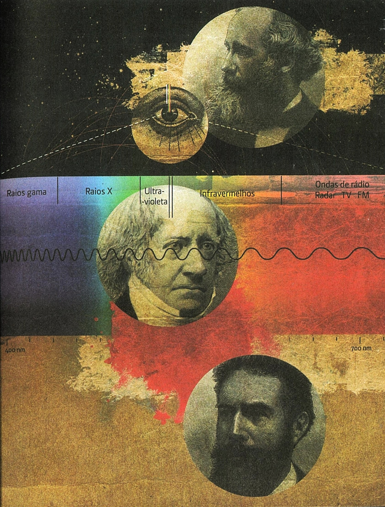
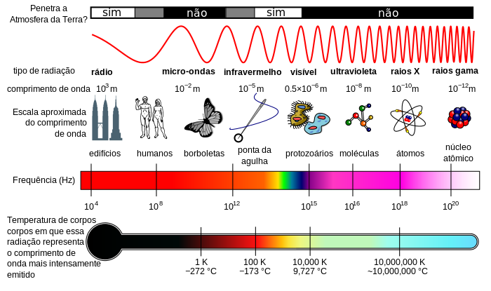
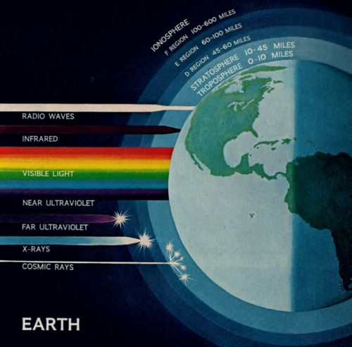
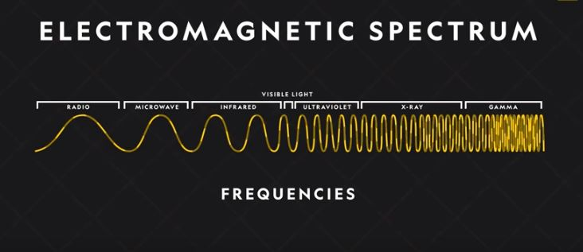

Slideshow


1.Definição
O espetro eletromagnético inclui uma grande amplitude de ondas eletromagnéticas.
A luz pode ser considerada como uma onda de eletricidade e magnetismo em interação que viaja através do espaço, mas, na verdade, é apenas uma parte daquilo a que chamammos espetro eletromagnético. Em termos de comprimento de onda, o espetro eletromagnético vai desde as ondas de rádio mais longas até às ondas mais curtas dos raios gama, sendo que a luz é apenas uma pequena parte de todo o espetro. Se usássemos o teclado de um piano para representar todo o espetro eletromagnético, a parte correspondente à luz seria menor do que uma única tecla.
Figura 1. O físico James Clerk Maxwell (em cima),o astrónomo William Herschel (ao centro) e o físico Wilhelm Röntgen (em baixo) fizeram descobertas importantes para o conhecimento do espetro eletromagnético.
Durante muito tempo, a luz era a única parte conhecida do espectro eletromagnético. Os gregos antigos tinham a noção de que a luz viajava a forma de linhas retas, chegando a estudar algumas de suas propriedades, que fazem parte do que atualmente denominamos óptica geométrica. Foi somente nos séculos XVI e XVII que o estudo da luz passou a gerar teorias conflitantes quanto a sua natureza.
Foi James Clerk Maxwell que mostrou em meados do século XIX que a luz é apenas uma forma de radiação eletromagnética, sendo a parte a que os nossos olhos são sensíveis. Em 1800, o astrónomo William Herschel descobriu acidentalmente aquilo a que atualmente chamamos de infravermelho, e no ano seguinte o ultravioleta foi descoberto, também acidentalmente, por Johann Wilhelm Ritter. Os raios x e os raios gama foram descobertos na década de 1890. Quanto mais curto o comprimento da onda, maior energia possui a radiação:assim, os raios gama, que têm o comprimento de onda mais cuto, têm mais energia do que quaiquer outros, e são muito perigosos. Todas as radiações eletromagnéticas viajam à velocidade da luz, como por exemplo, as ondas de rádio.
De seguida estão presentes os diversos tipos de ondas eletromagnéticas:
- Rádio,
- Microndas,
- Infravermelhos,
- Vísivel,
- Ultravioleta,
- Raios X,
- Raios Gamas.
2. Vídeo
3. Gráficos
De seguida seguem se gráficos que exemplificam de que maneira o espetro eletromagnético interage com o planeta terra.
Figura 2. Gráfico informativo sobre o Espetro Eletromagnético.
Figura 3. Ilustração do Espetro Eletromagnético.
Figura 4. Ondas eletromagnéticas (referência do vídeo Electromagnetism 101 | National Geographic)
4. Tabela
| Espetro Eletromagnético | |||||
|---|---|---|---|---|---|
| Nome de radiação | Tipo de frequência | Frequência | Comprimento da onda | Visibilidade da onda | Exemplos |
| Rádio | Frequências longas e baixas | 3 Hz - 300 kHz | 100000km - 1km | Não visível | Sinais de televisão, rádio (FM), Wi-fi, Bluetooth, radar |
| Microndas | Frequências longas e baixas | 3 MHz - 300 GHz | 100m - 1mm | Não visível | Sinais de microondas e telemóveis |
| Infravermelhos | Frequências longas e baixas | 3 THz - 30 THz | 100 μm - 10 μm | Não visível | Ondas imitidas pelo fogo |
| Vísivel | Frequências médias | 300 THz | 1 μm | Visível | Estrelas, pirilampos e ecrãs de computadores |
| Ultravioleta | Frequências curtas e altas | 3 PHz - 30 PHz | 100 nm - 10 nm | Não visível | Luz solar |
| Raios X | Frequências curtas e altas | 300 PHz - 30 EHz | 1 nm - 10 pm | Não visível | Segurança dos aeroportos e exames médicos |
| Raios Gamas | Frequências curtas e altas | 300 EHz | 1 pm | Não visível | Tratamento de cancro |